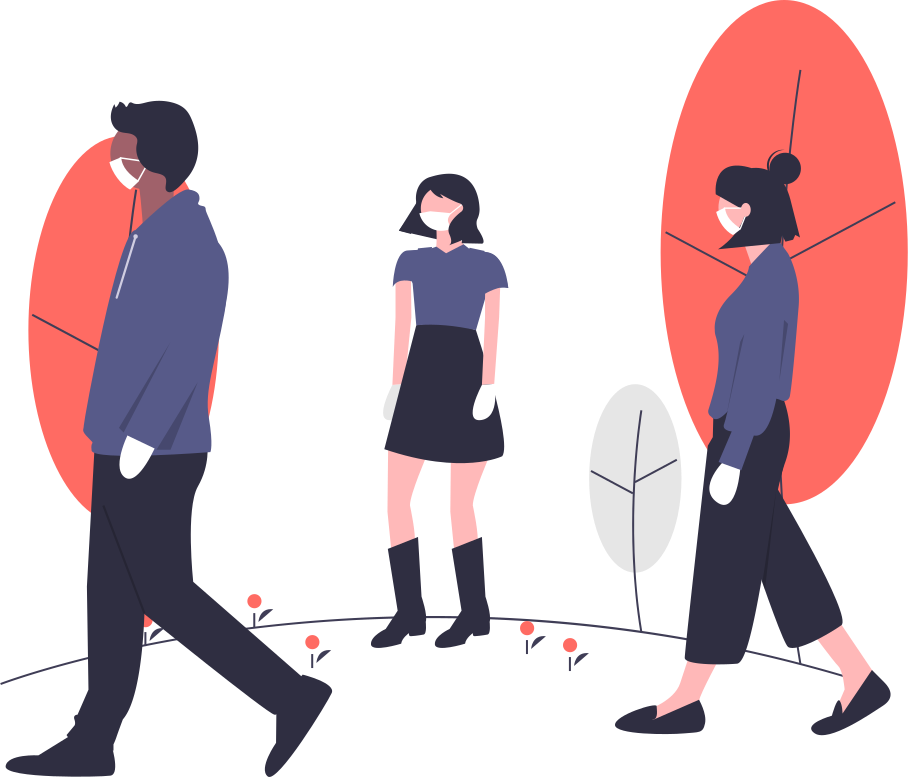

<ion-header>
  <ion-toolbar color="danger">
    <ion-buttons>
      <ion-menu-button></ion-menu-button> 
    <ion-title>Higiene</ion-title>
    </ion-buttons>
  </ion-toolbar>
</ion-header>

<ion-content>
  <ion-card>
    <ion-card-title>Recomendaciones generales</ion-card-title>
    <ion-card-content>
      Es un gusto para nosotros traerles algunas recomendaciones que los expertos aconsejan durante esta pandemia mundial.
    </ion-card-content>
    <ion-card-content>
      
    </ion-card-content>
  </ion-card>
  <ion-card>
    <ion-list *ngFor = "let f of recomendacionesFiltradas">
      <ion-item>{{f.name}}<ion-icon slot="end" name="{{f.icon}}"></ion-icon></ion-item>
      <ion-card-content>{{f.info}}</ion-card-content>
      <ion-button (click)="quedarse(f.name)" expand="full" color="danger">{{f.button}}</ion-button>
    </ion-list>
  </ion-card>
</ion-content>
